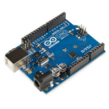
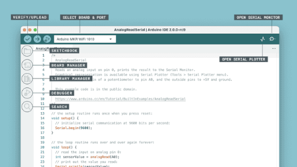
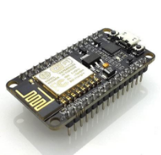
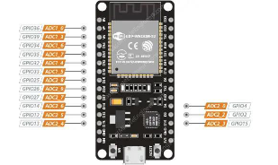

Getting Started with Microcontroller Programming
What Are Microcontrollers?
A microcontroller is a small, programmable computer-on-a-chip used to control devices. They combine:
- Processor (CPU): Executes commands.
- Memory: Stores programs and data.
- I/O Ports: Connects to external devices like sensors, LEDs, and motors.
- Peripherals: Include timers, ADC (Analog-to-Digital Converters), and communication protocols like UART, I2C, and SPI.
Microcontrollers are essential for embedded systems in appliances, vehicles, and IoT devices. Common types include:
- ATmega328P: Found in Arduino UNO.
- ESP8266 and ESP32: Advanced microcontrollers with Wi-Fi/Bluetooth for IoT.
What Is Arduino?
Arduino is an open-source platform designed for electronics projects. It simplifies working with microcontrollers using:
- Hardware: A physical board like the Arduino UNO.
- Arduino IDE: An easy-to-use development environment for programming boards.
Arduino is widely used in IoT, robotics, and automation projects.

The Arduino UNO
Key Features
- Microcontroller: ATmega328P
- Operating Voltage: 5V
- Digital I/O Pins: 14 (6 PWM)
- Analog Input Pins: 6
- Clock Speed: 16 MHz
Core Functions
-
pinMode(): Configures a pin asINPUTorOUTPUT.pinMode(pin, INPUT/OUTPUT); -
digitalWrite(): Sets a digital pin toHIGHorLOW.digitalWrite(pin, HIGH/LOW); -
digitalRead(): Reads the state of a digital pin.int state = digitalRead(pin); -
analogRead(): Reads analog input from a pin.int value = analogRead(pin); -
analogWrite(): Writes a PWM signal to a pin.analogWrite(pin, value); // Value: 0-255 -
delay(): Pauses execution for a specified time (ms).delay(1000); // 1 second
Example: Blinking an LED
int ledPin = 13;
void setup() {
pinMode(ledPin, OUTPUT);
}
void loop() {
digitalWrite(ledPin, HIGH); // Turn on
delay(1000); // Wait 1 second
digitalWrite(ledPin, LOW); // Turn off
delay(1000); // Wait 1 second
}
Arduino IDE Features
-
Serial Communication: Enables communication between your computer and Arduino.
Serial.begin(): Initializes communication.Serial.begin(9600); // Baud rateSerial.print()/Serial.println(): Sends data to Serial Monitor.Serial.print("Hello"); // Sends "Hello" Serial.println("World"); // Sends "World" with newline
-
Setup and Loop: Main functions in Arduino programming.
setup(): Runs once at startup.void setup() { // Initialization code }loop(): Repeats after setup.void loop() { // Main code }

ESP8266 Microcontroller

Key Features
- Processor: 32-bit Tensilica L106 (80 MHz)
- Wi-Fi: 802.11 b/g/n
- GPIO Pins: 11
- Memory: Up to 4 MB Flash
Core Functions
-
Wi-Fi Connection
#include <ESP8266WiFi.h> const char* ssid = "Your_SSID"; const char* password = "Your_PASSWORD"; void setup() { WiFi.begin(ssid, password); while (WiFi.status() != WL_CONNECTED) { delay(500); } } -
GPIO Control
pinMode(2, OUTPUT); // Set GPIO2 as output digitalWrite(2, HIGH); // Set GPIO2 HIGH digitalWrite(2, LOW); // Set GPIO2 LOW
ESP32 Microcontroller

Key Features
- Processor: Dual-core Tensilica Xtensa LX6 (up to 240 MHz)
- Wi-Fi: 802.11 b/g/n
- Bluetooth: BLE and Classic
- GPIO Pins: 34
- Additional Features: Touch sensors, DAC, cryptographic engines.
Core Functions
-
Wi-Fi Connection
#include <WiFi.h> const char* ssid = "Your_SSID"; const char* password = "Your_PASSWORD"; void setup() { WiFi.begin(ssid, password); while (WiFi.status() != WL_CONNECTED) { delay(500); } } -
GPIO Control
pinMode(2, OUTPUT); // Set GPIO2 as output digitalWrite(2, HIGH); // Turn on GPIO2 digitalWrite(2, LOW); // Turn off GPIO2 -
PWM Control
ledcSetup(channel, freq, resolution); // Set up PWM channel ledcAttachPin(pin, channel); // Attach pin to channel ledcWrite(channel, dutyCycle); // Set duty cycle (0-255)
Key Differences: Arduino UNO, ESP8266, and ESP32
| Feature | Arduino UNO | ESP8266 | ESP32 |
|---|---|---|---|
| Processor | ATmega328P | Tensilica L106 | Tensilica Xtensa LX6 |
| Clock Speed | 16 MHz | 80 MHz | Up to 240 MHz |
| Connectivity | None | Wi-Fi | Wi-Fi + Bluetooth |
| GPIO Pins | 14 (6 PWM) | 11 | 34 |
| Operating Voltage | 5V | 3.3V | 3.3V |
| Applications | Prototyping | IoT Projects | Advanced IoT, Robotics |
Microcontrollers like the Arduino UNO, ESP8266, and ESP32 allow developers to create projects in automation, IoT, and beyond. By understanding their unique capabilities and coding functions, you can choose the right microcontroller for your application.